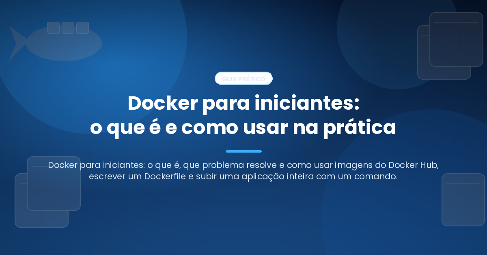

Publicado em 14 de setembro de 2026, às 15:04, por Pedro Nakashima

Docker é um programa que empacota uma aplicação junto com tudo de que ela precisa para funcionar — código, bibliotecas, versão exata da linguagem, arquivos de configuração — em uma unidade isolada chamada container, que roda igual em qualquer computador. É a resposta técnica à frase mais cansada do desenvolvimento de software: “na minha máquina funciona”. Este guia parte do zero, sem pressupor que você já tenha ouvido falar em containers, e vai até o ponto em que você sobe uma aplicação com banco de dados usando um único comando.
O que é Docker
Docker é uma plataforma de containerização. Ele pega uma aplicação e a coloca dentro de um container: um processo que roda no seu sistema operacional, mas enxerga um sistema de arquivos próprio, uma rede própria e um conjunto próprio de processos, como se estivesse sozinho na máquina.
A tecnologia por baixo não é nova. O núcleo do Linux já oferecia os mecanismos de isolamento (namespaces, que separam o que cada processo enxerga, e cgroups, que limitam quanta memória e CPU ele pode consumir) anos antes do Docker existir. O que o Docker fez, a partir de 2013, foi transformar esses mecanismos em algo utilizável: um formato de empacotamento, um registro público de onde baixar pacotes prontos e meia dúzia de comandos. Hoje o formato é um padrão aberto, mantido pela Open Container Initiative, o que significa que uma imagem criada com Docker roda em outras ferramentas de container.
O problema que o Docker resolve
Imagine instalar um projeto alheio na sua máquina. O README pede Python 3.11, mas você tem o 3.13. Pede PostgreSQL 15, e o seu é o 17. Pede uma biblioteca de imagem que só compila com uma versão específica de uma dependência do sistema. Três horas depois, você desistiu ou quebrou outro projeto que funcionava.
O problema não é a falta de instruções. É que a aplicação depende do ambiente inteiro em que roda, e esse ambiente é diferente em cada computador. Duas máquinas com o mesmo código produzem resultados diferentes porque tudo o que está em volta do código é diferente.
O Docker resolve isso transformando o ambiente em um arquivo. Em vez de descrever em prosa o que instalar, você escreve uma receita que o Docker executa, e o resultado é um pacote imutável que se comporta igual no seu notebook, na máquina de um colega e no servidor de produção. É a mesma mudança de mentalidade que o versionamento trouxe para o código, e que expliquei no guia sobre Git e GitHub para iniciantes: parar de depender do estado atual da máquina e passar a depender de algo escrito, versionado e reproduzível.
Imagem e container: a distinção que organiza tudo
Esses dois termos são confundidos o tempo todo, e entender a diferença resolve metade das dúvidas de quem começa.
Uma imagem é o pacote em repouso: um sistema de arquivos empilhado em camadas, contendo a aplicação e suas dependências, mais a instrução de qual comando executar. Ela é somente leitura e não faz nada sozinha.
Um container é a imagem em execução: um processo vivo, com uma camada gravável por cima da imagem. Você pode criar dez containers a partir da mesma imagem, e eles não se enxergam nem interferem uns nos outros.
A analogia mais útil vem da programação: a imagem é a classe, o container é a instância. Quando o container morre, a camada gravável dele morre junto — e é exatamente por isso que existem volumes, assunto de uma seção adiante.
Vale registrar o que um container não é: uma máquina virtual. Uma máquina virtual carrega um sistema operacional completo, com núcleo próprio, e gasta gigabytes e minutos para subir. Um container compartilha o núcleo do sistema hospedeiro e sobe em milissegundos, ocupando megabytes. É essa diferença de custo que permite subir seis containers no notebook sem pensar duas vezes.
Docker Hub: de onde vêm as imagens
Você raramente constrói uma imagem do zero. Baixa uma pronta e parte dela. O lugar padrão para isso é o Docker Hub, um registro público com milhões de imagens, e é para lá que o Docker vai quando você não diz o contrário.
O comando é docker pull, e o nome de uma imagem tem três partes:
docker pull python:3.12-slim
# └──┬─┘ └────┬────┘
# repositório tag (versão/variante)Três tipos de imagem convivem lá, e distinguir entre eles é uma questão de segurança:
- Imagens oficiais (
python,postgres,nginx,ubuntu): mantidas em colaboração com a Docker, com nome curto e sem barra. São o ponto de partida seguro. - Publicadores verificados (
bitnami/postgresql,grafana/grafana): empresas identificadas, com selo no registro. - Imagens da comunidade (
fulano/minha-api): qualquer pessoa publica. Trate-as como código de terceiros — porque é o que são.
Nunca use a tag latest em algo que importa. Ela não significa “a mais recente”: significa “a que o publicador apontou como padrão”, e ela muda sem aviso. postgres:latest hoje e daqui a três meses podem ser versões maiores diferentes, e o seu projeto quebra sem que uma linha do seu código tenha mudado. Fixe a versão: postgres:17.
Há um limite prático a conhecer. O Docker Hub restringe quantas imagens você baixa: segundo a documentação oficial de limites de uso, são 100 downloads a cada 6 horas para quem não está autenticado (contados por endereço IP, o que inclui a rede inteira de um escritório), 200 a cada 6 horas para contas gratuitas autenticadas, e sem limite nos planos pagos. Rodar docker login com uma conta gratuita já dobra o seu teto e é grátis.
Os comandos do dia a dia
Meia dúzia de comandos cobre quase tudo. Este sobe um servidor web e o publica na porta 8080 da sua máquina:
docker run -d --name web -p 8080:80 nginx:1.27Cada parte importa: -d roda em segundo plano, --name dá um nome para você não precisar decorar identificadores, e -p 8080:80 liga a porta 8080 do seu computador à porta 80 de dentro do container. Sem o -p, o servidor sobe e ninguém consegue acessá-lo — é o erro número um de quem está começando.
Os demais:
docker ps # containers em execução
docker ps -a # inclusive os parados
docker logs -f web # acompanha a saída do container
docker exec -it web bash # abre um terminal dentro do container
docker stop web # para (envia sinal de término)
docker rm web # remove o container parado
docker images # imagens baixadas
docker system df # quanto espaço tudo isso está ocupandodocker exec -it é o que mais ajuda a aprender: você entra no container e descobre que lá dentro há um sistema de arquivos Linux comum, com a sua aplicação em algum diretório. O mistério acaba nesse momento.
Dockerfile: a receita da sua própria imagem
O Dockerfile é um arquivo de texto, sem extensão, na raiz do projeto. Cada linha é uma instrução, e cada instrução gera uma camada da imagem.
FROM python:3.12-slim
WORKDIR /app
COPY requirements.txt .
RUN pip install --no-cache-dir -r requirements.txt
COPY . .
EXPOSE 8000
CMD ["python", "-m", "uvicorn", "main:app", "--host", "0.0.0.0"]Lendo de cima para baixo: parte de uma imagem oficial enxuta do Python; define /app como diretório de trabalho; copia a lista de dependências e as instala; copia o resto do código; documenta a porta que a aplicação usa; e declara o comando que roda quando o container sobe.
A ordem das linhas não é estética — é desempenho. O Docker guarda cada camada em cache e só refaz a partir da primeira que mudou. Copiar requirements.txt antes do código faz com que uma alteração em um arquivo .py não reinstale todas as dependências. Inverta as duas linhas e cada mudança de uma vírgula no código custará a instalação inteira de novo.
Dois detalhes que poupam dor:
- Um arquivo
.dockerignore, no mesmo formato do.gitignore, impede que.git/,venv/,node_modules/e arquivos de segredo entrem na imagem. Sem ele, a imagem incha e você pode publicar credenciais sem perceber. --host 0.0.0.0no comando final: dentro do container,localhosté o próprio container. Uma aplicação que escuta só em127.0.0.1fica inalcançável de fora, mesmo com o-pcorreto.
Construir e rodar:
docker build -t minha-api:1.0 .
docker run -d -p 8000:8000 minha-api:1.0O ponto final do build é o contexto: a pasta cujo conteúdo é enviado ao Docker. É por isso que o .dockerignore importa.
Docker Compose: a aplicação inteira num arquivo
Uma aplicação real raramente é um container. É a API, mais o banco de dados, mais um cache, mais talvez um serviço de fila. Subir isso com docker run significa quatro comandos longos, na ordem certa, com as redes criadas à mão. O Docker Compose substitui tudo isso por um arquivo YAML e um comando.
O arquivo se chama compose.yaml (o nome antigo, docker-compose.yml, continua funcionando) e fica na raiz do projeto:
services:
api:
build: .
ports:
- "8000:8000"
environment:
DATABASE_URL: postgresql://app:senha@db:5432/app
depends_on:
db:
condition: service_healthy
db:
image: postgres:17
environment:
POSTGRES_USER: app
POSTGRES_PASSWORD: senha
POSTGRES_DB: app
volumes:
- dados_db:/var/lib/postgresql/data
healthcheck:
test: ["CMD-SHELL", "pg_isready -U app"]
interval: 5s
retries: 5
volumes:
dados_db:O YAML é um formato de configuração baseado em indentação por espaços — nunca tabulações, que causam erro de leitura. Cada nível de dois espaços significa “pertence ao item acima”. Aqui há dois blocos de primeiro nível: services, com os containers, e volumes, com o armazenamento persistente. Dentro de services, api e db são nomes que você escolhe, e é por esses nomes que os containers se acham na rede.
Repare no DATABASE_URL: o endereço do banco é db, não localhost nem um IP. Isso é o Compose criando uma rede e um nome para cada serviço — assunto da seção sobre redes.
O depends_on com condition: service_healthy resolve um problema clássico: o container do banco sobe em um segundo, mas o PostgreSQL leva mais alguns para aceitar conexões. Sem a condição, a API tenta conectar e morre. Com ela, o Compose espera o healthcheck passar.
Subir, descer e as variações que importam
docker compose up -d # sobe tudo em segundo plano
docker compose up --build # reconstrói as imagens antes de subir
docker compose ps # o que está no ar
docker compose logs -f api # acompanha os logs de um serviço
docker compose exec api bash # terminal dentro do serviço
docker compose restart api # reinicia um serviço só
docker compose stop # para os containers, sem apagar nada
docker compose down # para e remove containers e redes
docker compose down -v # o mesmo, e apaga também os volumesA distinção entre stop, down e down -v é a que mais causa estrago. stop congela; up -d depois disso retoma tudo. down remove os containers e a rede, mas preserva os volumes — seus dados continuam lá. down -v remove os volumes junto, e é irreversível: o banco de dados some. Trate o -v com o mesmo cuidado de um rm -rf.
Uma nota sobre o nome do comando: docker compose, sem hífen, é um plugin do próprio Docker. O antigo docker-compose, com hífen, era um programa separado escrito em Python e foi descontinuado. Tutoriais que usam a forma com hífen estão desatualizados, ainda que a sintaxe do arquivo seja praticamente a mesma.
Vale conhecer também o docker compose watch, que observa os arquivos do projeto e sincroniza, reconstrói ou reinicia o serviço conforme o que mudou — elimina a reconstrução manual durante o desenvolvimento.
Volumes: onde os dados sobrevivem
A camada gravável de um container é descartável. Escreva um arquivo dentro dele, remova o container, e o arquivo morreu junto. Para um servidor web isso é ótimo; para um banco de dados, é uma catástrofe.
Volumes são o mecanismo de persistência. Há dois tipos, e escolher errado é fonte de confusão.
O volume nomeado é gerenciado pelo Docker, guardado em uma área própria dele, e é a escolha certa para dados de aplicação — bancos, uploads, índices:
volumes:
- dados_db:/var/lib/postgresql/dataO bind mount liga uma pasta da sua máquina a uma pasta do container, e serve para desenvolvimento: você edita o código no editor e o container vê a mudança na hora.
volumes:
- ./src:/app/srcA sintaxe é sempre origem:destino. Se a origem começa com . ou /, é um caminho da sua máquina; se é um nome simples, é um volume nomeado, que precisa estar declarado no bloco volumes do primeiro nível.
Os comandos de gerência são poucos: docker volume ls lista, docker volume inspect <nome> mostra onde está, docker volume rm <nome> remove. E docker system prune -a --volumes limpa tudo o que não está em uso — comando útil e perigoso, que já apagou banco de desenvolvimento de muita gente.
Redes: como os containers se falam
Todo container criado pelo Compose entra automaticamente em uma rede virtual, e dentro dela o nome do serviço vira o endereço. Por isso a API do exemplo conecta em db:5432: o Docker mantém um resolvedor de nomes interno que traduz db para o IP do container naquele momento.
Três consequências práticas:
- Containers na mesma rede se falam por qualquer porta, sem precisar de
ports. Oportssó existe para expor um serviço ao seu computador. Um banco de dados que só a API acessa não precisa — e não deve — ter porta publicada. localhostdentro do container é o container. Configuração copiada de um ambiente sem Docker quase sempre falha por isso.- Para acessar um serviço que roda na sua máquina, e não em container, use o nome especial
host.docker.internalem vez delocalhost.
Fora do Compose, você cria a rede à mão:
docker network create minha-rede
docker run -d --name db --network minha-rede postgres:17
docker run -d --name api --network minha-rede -p 8000:8000 minha-api:1.0É exatamente o que o Compose faz por você, e a razão de quase ninguém fazer isso manualmente.
Docker no Ubuntu
No Linux, o Docker roda nativamente: não há máquina virtual no meio, e o desempenho é o do sistema. A instalação recomendada é pelo repositório oficial da Docker, descrita no guia de instalação para Ubuntu — e não pelo pacote docker.io dos repositórios da distribuição, que costuma estar desatualizado, nem pelo pacote Snap, que causa problemas de permissão em volumes.
Depois de configurar o repositório, a instalação traz o motor e os plugins:
sudo apt install docker-ce docker-ce-cli containerd.io \
docker-buildx-plugin docker-compose-pluginHá um passo pós-instalação que quase todo tutorial menciona sem a ressalva devida. Por padrão, todo comando exige sudo. Para evitar isso, adiciona-se o usuário ao grupo docker:
sudo usermod -aG docker $USER
newgrp dockerA ressalva: o grupo docker equivale a acesso de administrador na máquina. Quem pode falar com o serviço do Docker pode montar o disco inteiro dentro de um container e sair como root. A própria documentação de pós-instalação alerta para isso. Em um notebook pessoal, é um risco aceitável; em um servidor compartilhado, não é, e a alternativa é o modo rootless.
Dois detalhes do Linux que aparecem cedo: arquivos criados por um container em um bind mount pertencem ao usuário que roda dentro dele, o que produz arquivos com dono root na sua pasta; e sudo systemctl enable --now docker garante que o serviço suba junto com o sistema.
Docker Desktop no Windows
No Windows, containers Linux precisam de um núcleo Linux, e ele não existe nativamente. O Docker Desktop resolve isso empacotando esse núcleo, uma interface gráfica e o Compose em uma instalação só. O caminho recomendado é o backend WSL 2, o subsistema Linux do próprio Windows, bem mais leve e rápido que a alternativa com Hyper-V.
O que muda na prática:
- Os comandos são idênticos. O
compose.yamle oDockerfileescritos no Windows funcionam sem alteração no Linux. É esse o ponto do Docker. - Onde ficam os arquivos decide o desempenho. Um projeto guardado em
C:\Users\...e acessado pelo container atravessa a fronteira entre os dois sistemas de arquivos a cada leitura, e a diferença é brutal em projetos com muitos arquivos pequenos. Guarde o projeto dentro do sistema de arquivos do WSL (\\wsl$\Ubuntu\home\seu-usuario\), abra o terminal do Ubuntu e trabalhe a partir dali. - Quebras de linha viram um problema silencioso. O Windows usa
CRLF; scripts copiados para dentro de uma imagem Linux falham com mensagens incompreensíveis. Um.gitattributescom* text=auto eol=lfno repositório resolve na origem. - A licença tem condições. Segundo os termos de assinatura do Docker Desktop, ele é gratuito para uso pessoal, educação, projetos de código aberto não comerciais e empresas pequenas — com menos de 250 funcionários e menos de 10 milhões de dólares de receita anual. Acima de qualquer um dos dois limites, o uso profissional exige assinatura paga. Vale conferir antes de adotar a ferramenta no trabalho.
Para que serve, além de empacotar aplicações web
O uso mais divulgado do Docker é o de colocar um sistema em produção, mas ele é útil bem antes disso:
- Testar um banco de dados em trinta segundos.
docker run --rm -e POSTGRES_PASSWORD=x -p 5432:5432 postgres:17dá um PostgreSQL limpo, e o--rmapaga tudo quando você o para. Nada foi instalado na sua máquina. - Reprodutibilidade em análise de dados. Um ambiente de análise congelado em uma imagem é o que permite a alguém, dois anos depois, rodar o mesmo script e obter o mesmo número. Quem trabalha com Python para análise de dados costuma chegar ao Docker por esse caminho, e não pelo de infraestrutura.
- Integração contínua. Praticamente toda plataforma de automação executa os testes dentro de containers, porque é a única forma barata de garantir um ambiente idêntico a cada execução.
- Rodar ferramentas sem instalá-las. Um conversor de documentos, um cliente de banco, um utilitário de linha de comando — tudo pode rodar em container e sumir depois, sem deixar dependências na máquina.
- Ensino e material didático. Distribuir um
compose.yamljunto com o material elimina a aula inteira que se perde com problemas de instalação.
O que mudou recentemente
Três movimentos valem menção, porque mudam o que significa “usar Docker” hoje.
Os limites do Docker Hub entraram no radar. Em fevereiro de 2025 a Docker anunciou limites bem mais rígidos, por hora em vez de por período de 6 horas, com vigência em 1º de abril daquele ano. A reação foi forte, e a empresa recuou: os limites novos não foram aplicados, os antigos permaneceram, e a Docker se comprometeu a anunciar qualquer mudança futura com pelo menos seis meses de antecedência. O episódio deixou uma lição prática que sobrevive ao caso: quem depende do registro público em automações deve autenticar-se, usar um espelho interno ou fixar as imagens críticas.
O Compose passou a orquestrar modelos de IA. A especificação ganhou um bloco models de primeiro nível, e um serviço declara dependência de um modelo como declara dependência de um banco:
services:
chat-app:
image: my-chat-app
models:
- llm
models:
llm:
model: ai/smollm2O modelo é baixado como artefato de container e servido localmente pelo Docker Model Runner, conforme a documentação de modelos no Compose. A consequência é conceitual: um modelo de linguagem passa a ser mais uma dependência versionada da aplicação, como o PostgreSQL, em vez de um serviço externo com chave de API.
Servidores MCP viraram imagens. O catálogo e o toolkit MCP da Docker empacotam servidores do Model Context Protocol — o padrão pelo qual assistentes de IA acessam ferramentas externas — como imagens de container verificadas, com versionamento e atualizações de segurança, configuradas uma vez e reaproveitadas por vários clientes. É o mesmo argumento de sempre, aplicado a um problema novo: em vez de instalar dez ferramentas com dez conjuntos de dependências na sua máquina, você as roda isoladas.
Erros comuns de quem está começando
- Confundir imagem com container.
docker rmremove container;docker rmiremove imagem. Remover o container não libera o espaço da imagem. - Usar a tag
latest. Ela muda sob os seus pés e transforma um projeto que funcionava em um quebra-cabeça. - Esquecer o
-p. O container sobe, o log diz que está tudo certo, e o navegador não abre nada. - Escutar em
127.0.0.1dentro do container. Aplicações web precisam de0.0.0.0para serem alcançáveis de fora. - Rodar
docker compose down -vpor reflexo. É o comando que apaga o banco de dados de desenvolvimento. - Colocar segredos no
Dockerfile. Cada instrução vira uma camada, e a camada guarda o valor mesmo que uma linha posterior o apague. Senha vai em variável de ambiente ou em arquivo não versionado. - Ignorar o espaço em disco. Imagens e volumes antigos acumulam dezenas de gigabytes em silêncio.
docker system dfmostra;docker system prunelimpa, com atenção ao que se está apagando.
Perguntas frequentes
Docker é o mesmo que máquina virtual?
Não. Uma máquina virtual emula um computador inteiro, com sistema operacional e núcleo próprios, e consome gigabytes de memória. Um container compartilha o núcleo do sistema hospedeiro e isola apenas o que a aplicação enxerga, o que o torna ordens de grandeza mais leve e rápido de iniciar.
Preciso saber Linux para usar Docker?
Ajuda, mas não é pré-requisito para começar. As imagens são baseadas em Linux e você acabará usando comandos como ls e cd dentro dos containers. Meia dúzia de comandos básicos é suficiente para os primeiros meses, e o próprio uso do Docker acaba ensinando o resto.
Docker é gratuito?
O motor do Docker é código aberto e gratuito em qualquer cenário. O que tem condições de licença é o Docker Desktop, a aplicação gráfica usada em Windows e macOS: gratuito para uso pessoal, educação, código aberto não comercial e empresas com menos de 250 funcionários e menos de 10 milhões de dólares de receita anual. No Linux, onde o motor roda direto, a questão nem se coloca.
Uso Docker em produção ou só para desenvolver?
Os dois. Em produção, porém, containers raramente rodam soltos: entram em um orquestrador, que cuida de reinício automático, distribuição de carga e atualização sem interrupção. O Compose é excelente para desenvolvimento e para servidores pequenos, e insuficiente para um sistema crítico com várias máquinas.
Preciso do Docker Hub para usar Docker?
Não. Ele é apenas o registro padrão. Você pode baixar imagens de outros registros, manter um registro privado ou trabalhar somente com imagens construídas localmente, sem publicar nada.
Conclusão
- Docker empacota a aplicação com o ambiente dela, transformando “funciona na minha máquina” em um arquivo versionado que funciona em qualquer máquina.
- Imagem é a receita, container é a execução. A imagem é imutável; a camada gravável do container morre com ele.
- O Docker Hub é a fonte padrão de imagens, com limites de download que valem conhecer — e a tag
latesté a armadilha mais frequente. - O
Dockerfiledescreve a sua imagem e a ordem das instruções decide o tempo de cada reconstrução. - O Compose descreve a aplicação inteira em um YAML, e
upedowna ligam e desligam;down -vtambém apaga os dados. - Volumes guardam o que precisa sobreviver ao container, e redes fazem os serviços se acharem pelo nome, sem porta publicada.
- Linux roda nativo e Windows usa o Docker Desktop com WSL 2 — comandos idênticos, com atenção a onde os arquivos ficam e à licença do Desktop em empresas maiores.
Tópicos: #Docker #Containers #DevOps #DockerCompose #Programacao